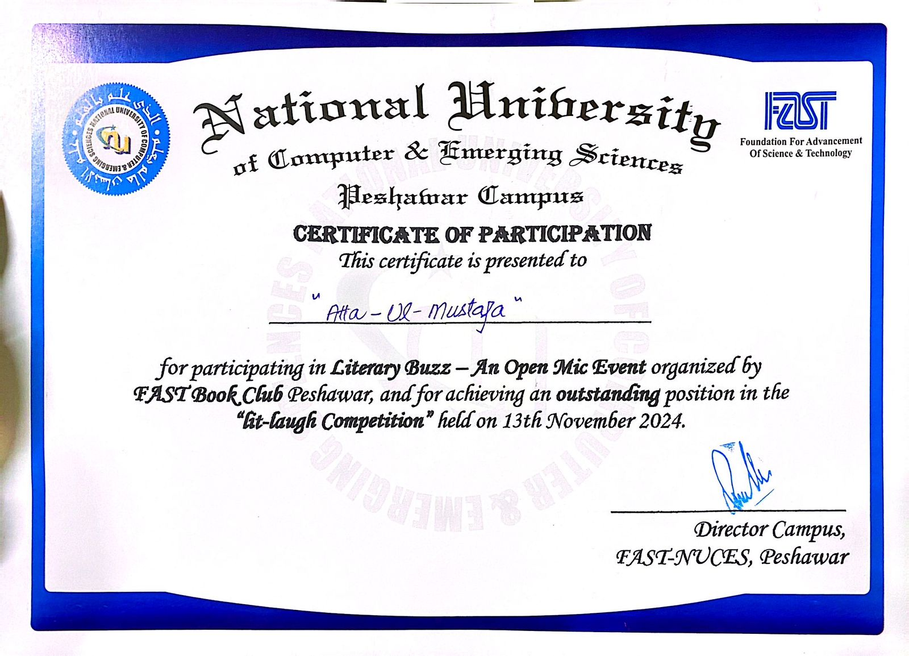
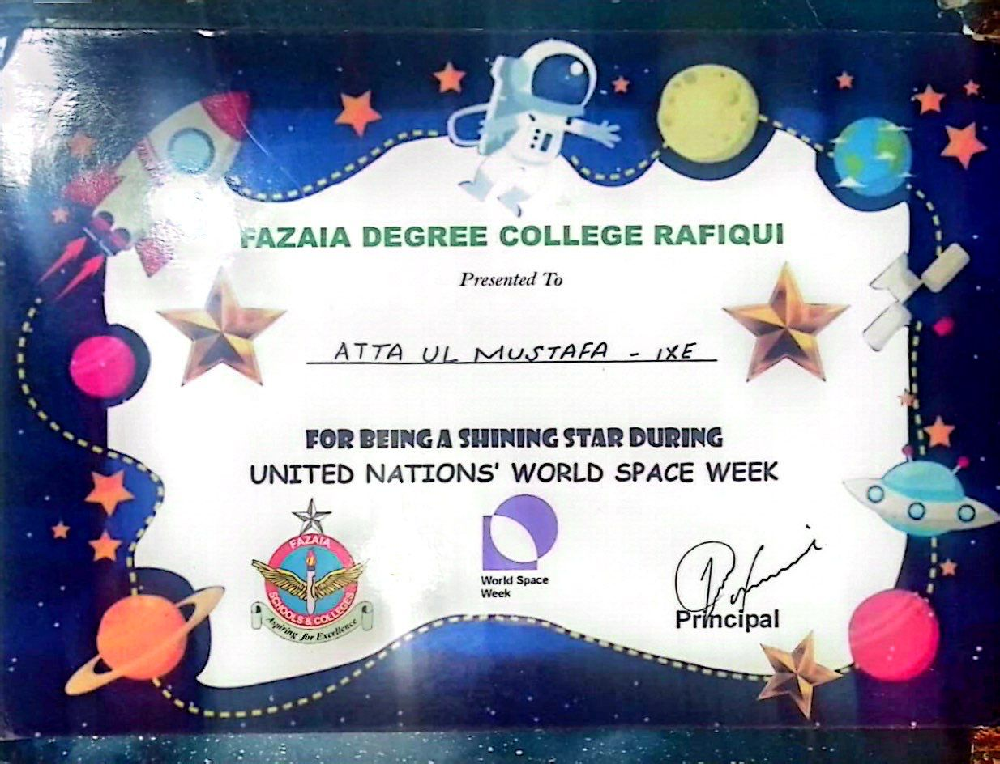
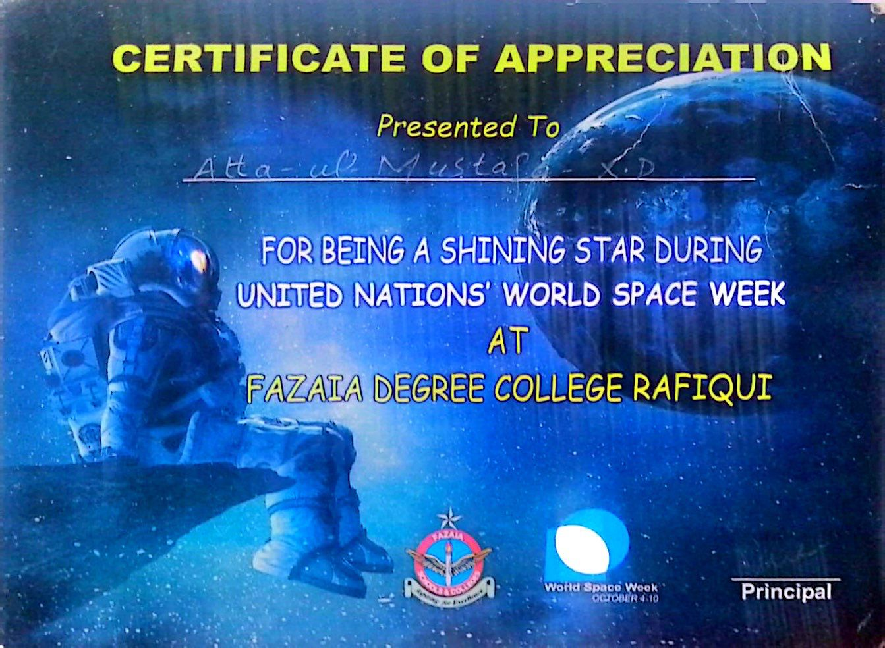
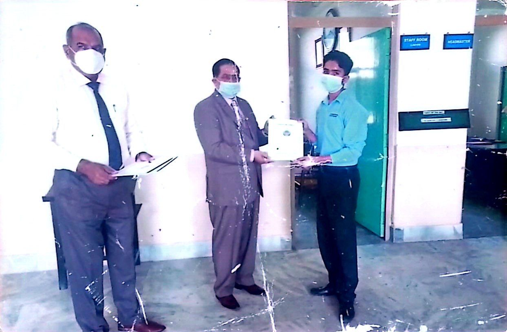
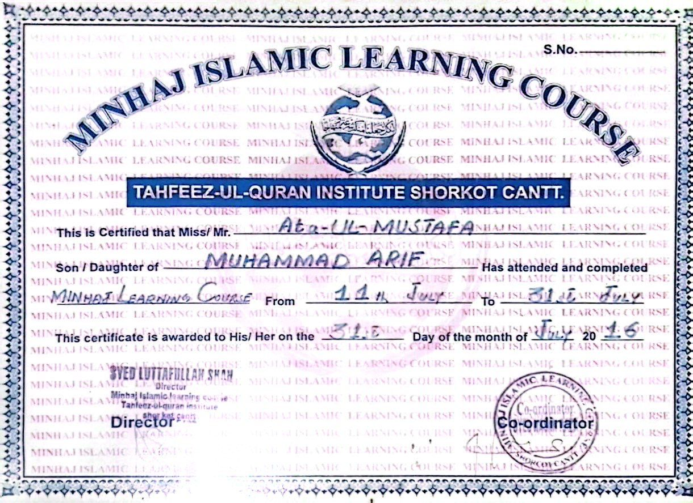
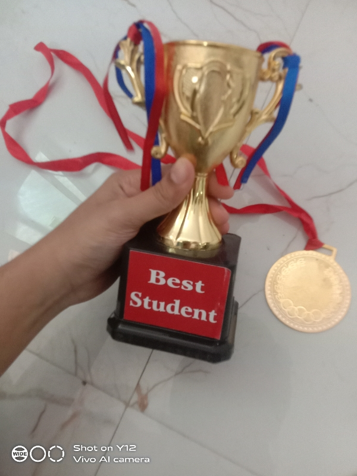

Hafiz Atta Ul Mustafa
malik54315@gmail.com
Hello, I'm Malik Atta Ul Mustafa, a Software Engineering student at FAST Peshawar. Passionate about technology and programming, I aim to create innovative solutions to real-world problems and continuously expand my skills in new technologies.
Outside of academics, I enjoy public speaking, e-gaming, video editing, and honing my negotiation skills through bargaining. Growing up on an airbase in Shorkot, Punjab, has taught me discipline, hard work, and resilience, which I apply in all aspects of life.
I aspire to contribute to the tech industry by developing impactful software solutions. Feel free to connect with me for collaboration or to learn more!
Experience
HEAD BOY
During my time at Fazaia Degree College, I had the honor of being the Head Boy. This role taught me leadership, responsibility, and how to support my peers. I learned valuable skills in communication, teamwork, and problem-solving, which helped me grow both personally and academically. It was a great experience that shaped me into a more confident and responsible individual.
General Member

I am honured to be selected as a general member of fast book club. I am looking forward to improve my skils during my time at fast book club.It is a great pleasure for my to be a part of such hardworking team. This opportunity will allow me to improve my reading, comprehension, and communication skills. I am excited to engage in discussions and gain new perspectives from fellow members. Being part of such a hardworking team is a great pleasure, and I look forward to contributing and learning. This experience will help me grow both academically and personally.
E-Gaming

Reaching Grand Master level in Free Fire has been an incredible experience. It pushed me to enhance my decision-making, teamwork, and strategic thinking. I learned how to stay calm under pressure and quickly adapt to changing situations. The game improved my communication skills, as I had to work closely with teammates to achieve our goals. It also sharpened my focus, reflexes, and hand-eye coordination. Achieving Grand Master level has been a rewarding journey, and it has significantly contributed to my personal growth and competitive mindset.
Freelancer
My experience on the freelancing website, specifically through supporting gigs, has been incredibly rewarding. Over time, I built my profile, gained trust, and honed my skills, which led to me earning over 100k. I learned how to communicate effectively with clients, manage multiple projects, and meet deadlines consistently. Each gig taught me valuable lessons in time management, customer service, and problem-solving. Earning such a significant amount has not only boosted my confidence but also helped me develop a professional work ethic. It has been a fulfilling journey that has opened up new opportunities for growth and learning.
Hafiz (Quran)

My experience with Hifz has been very special and rewarding. Memorizing the Quran has helped me build discipline, patience, and focus. It taught me the value of being consistent and dedicated in everything I do. Through Hifz, I’ve grown spiritually and gained a better understanding of Islam. Even though it was challenging at times, it has been a rewarding journey that continues to shape me in a positive way.
Education
FAST NU

Fazaia Degree College Rafiqui Shorkot Cantt
Fazaia Degree College Rafiqui Shorkot Cantt
Fazaia Inter College Quetta
Skills
-
C++
- C
- Html
- CSS
- Public Speaking
- freelancing
Interests & Hobbies
I have a variety of interests and hobbies that keep me engaged and help me learn new skills. One of my biggest interests is technology and programming. I enjoy exploring how different systems work and finding creative solutions to problems. This interest has helped me learn a lot about computers and software development, and it inspires me to keep improving my skills. Another hobby of mine is public speaking. I love sharing my thoughts and ideas with others and enjoy participating in discussions and debates. It has helped me become more confident and express myself better. I also enjoy e-gaming, especially playing Free Fire. Gaming helps me relax and also teaches me teamwork and strategy. Achieving Grand Master level in Free Fire was one of my biggest achievements in gaming and something I’m really proud of. Video editing is another hobby that I enjoy a lot. It allows me to be creative and turn simple ideas into amazing videos. It’s always fun to see the final result of my work after spending time editing. Lastly, I love bargaining. It’s a fun and useful skill that helps me get the best deals and improve my negotiation abilities. Overall, my hobbies not only keep me entertained but also help me grow as a person. Each activity teaches me something new and helps me improve my skills, making them a meaningful part of my life.
- Technology and Programming
- Public Speaking
- E-Gaming
- Video Editing
- Bargaining
- Reading
Awards & Certifications
-
FAST NU CERRTIFICATE ON OUTSTANDING POSITION IN COMPETITION
 -
CERTIFICATE BY FAZAIA DEGREE COLLEGE RAFIQUI
 -
CERTIFICATE OF APPRECIATION BY FDC

-
SPEECH COMPETITION AWARD BY WING COMMANDER MUNEER AHMED

-
MINHAJ ISLAMIC LEARNING COURSE
 -
Trophy and medal on securing 500 marks in SSC-1

Projects
- Freelance Web Development: Worked on small-scale websites for clients via SproutGigs.
- Video Editing Projects: Edited promotional videos for local events and e-sports teams.
- Gaming Team Strategy Development: Led strategic development and team management for competitive Free Fire tournaments.
- Debate Presentations: Designed compelling presentations and speeches for various debate competitions.